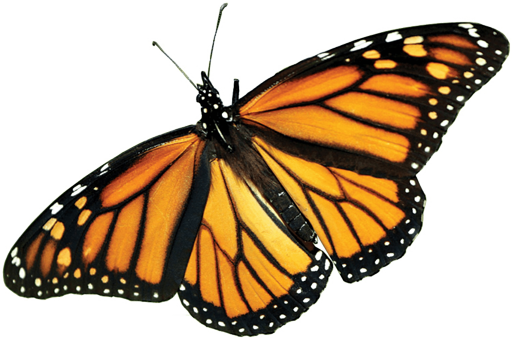
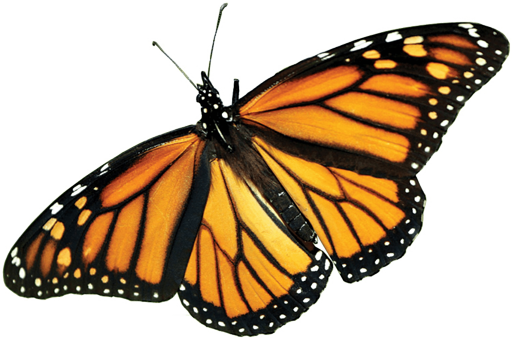

Monarch Butterfly
Danaus plexippus
Monarch butterflies embark on a marvelous migratory phenomenon. They travel between 1,200 and 2,800 miles or more from the United States and Canada to central Mexican forests. There the butterflies hibernate in the mountain forests, where a less extreme climate provides them a better chance to survive. The monarch butterfly is known by scientists as Danaus plexippus, which in Greek literally means "sleepy transformation." The name evokes the species' ability to hibernate and metamorphize.
Adult monarch butterflies possess two pairs of brilliant orange-red wings, featuring black veins and white spots along the edges. Males, who possess distinguishing black dots along the veins of their wings, are slightly bigger than females. Each adult butterfly lives only about four to five weeks.

 



STATUS:
Endangered
POPULATION:
29,000
HABITAT:
Forests, Mountains
THREATS
CHANGING CLIMATES
Climate change threatens to disrupt the monarch butterfly’s annual migration pattern by affecting weather conditions in both wintering grounds and summer breeding grounds. Colder, wetter winters could be lethal to these creatures and hotter, drier summers could shift suitable habitats north. WWF’s 2013 report from Mexico showed that the number of monarch butterflies wintering there was at its lowest in 20 years. The number is measured by the amount of forest they occupy, and in 2013 the number of butterfly acres decreased from approximately seven to three. Abnormal patterns of drought and rainfall in the U.S. and Canada breeding sites may have caused adult butterfly deaths and less plant food for caterpillars. Fewer butterflies up north mean fewer then migrate south to Mexico for the winter.
LOSS OF BREEDING HABITAT
The loss of milkweed in agricultural fields is a major cause of decline in monarchs, though there are other factors contributing to the decline in milkweed availability. Herbicide application and increased mowing in roadside ditches and agricultural margins is eradicating milkweed habitat even more from rural areas. If managed appropriately, roadsides could provide millions of acres of habitat suitable for monarchs and other pollinators. These areas are often mowed or sprayed regularly throughout the growing season to control weedy species, but if transformed into a native plant community, they could require signficantly less maintenance once established while providing important habitat. If mowing is used to manage weedy species or invasives, it is best to do it during times when monarchs will be least affected by the disturbance. In addition, leaving sections of the habitat untouched will allow pollinators and other wildlife to find refuge in those areas while the disturbed portion of the site recovers.
Urban sprawl and continuing industrial development are also major factors influencing the decline in quality monarch habitat. Other anthropogenic factors, such as ozone pollution or increased carbon dioxide levels, can affect the health and distribution of milkweed plants.

How Can I Help?

Call Your Representatives
100 companies are responsible for 71% of global emissions. Urge your congresspeople to pass legislation preventing corporations from destroying our planet.

Reduce Your Footprint
Commit to reducing food waste, electricity use, and walk, bike, or take public transportation. Buy only what you need and recycle what you no longer do.

Donate
Companies like IUCN Red List & World Wildlife Fund are committed to protecting habitats threatened by Climate Change and the animals that live there.